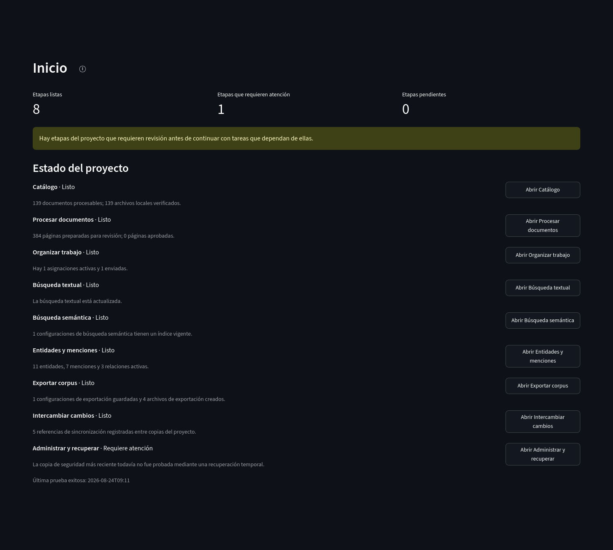

Documentación pública
Archive Workbench
Archive Workbench permite describir unidades de un catálogo, incorporar archivos digitales, extraer y revisar texto, trabajar con audio y video, registrar entidades y relaciones, buscar en los textos y transcripciones del proyecto y preparar resultados exportables. Cada proyecto conserva su base de datos y sus archivos en la computadora del equipo.
{kind=link}

Abrir captura completa
Capacidades principales
En esta documentación, corpus designa el conjunto de documentos, textos, transcripciones y otros materiales reunidos para el trabajo del proyecto.
Preparación del corpus
Descripción de unidades, incorporación de archivos digitales, trabajo con audio y video, preparación de imágenes y extracción de texto.
Organización y revisión
Distribución de tareas, comparación con las páginas originales, corrección del texto y revisión de estructura, anotaciones y menciones.
Exploración y descripción
Búsqueda literal o por significado, fichas de entidades, menciones y visualización de relaciones entre registros del proyecto.
Resultados y preservación
Exportaciones reproducibles, intercambio entre copias de trabajo, comprobaciones de integridad, copias de seguridad y recuperación.
Exportar corpus · Intercambiar cambios · Administrar y recuperar
Flujo de trabajo

Abrir figura completa
Almacenamiento local
Cada proyecto se guarda en una carpeta local con su base de datos SQLite, configuración, archivos incorporados o vinculados y resultados conservados por el equipo. En la distribución administrada mediante Docker, la carpeta ArchiveWorkbenchData permanece fuera del contenedor, por lo que actualizar la imagen de la aplicación no reemplaza los proyectos.
Google Drive puede transportar paquetes de intercambio o copias preparadas por la aplicación. No funciona como ubicación compartida para una base SQLite abierta simultáneamente por varias personas.
Decisiones explícitas
Los resultados automáticos permanecen diferenciados de las decisiones registradas. El OCR puede producir texto, una búsqueda puede detectar posibles referencias a entidades y la búsqueda semántica puede ordenar fragmentos por similitud; esas salidas se revisan antes de incorporarse a las capas editables o descriptivas del proyecto.
La página Conceptos define el vocabulario utilizado en el resto de la documentación.